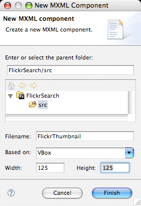
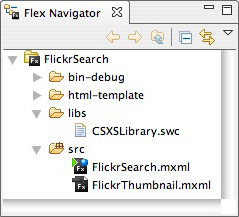

Flickr Search Panel: Create Custom Module
The third part of the Flickr Search Panel is creating a custom module for the tile list control component. The custom module will be designed as a new component called a Flickr Thumbnail. The module will be a vertical box component containing a fixed-size image and a fixed-size text field. The fixed-size image and fixed-size text will retrieve the data from the main application and use the photograph's properties such as the internet's location to display the image and the name of the image to display the text. The result is using the Flickr Thumbnail module to be placed in the tile list control component of the main application.
Instructions:
- Go to File > New > MXML Component.
- Under Filename:, type in FlickrThumbnail.
- Under Based on:, select VBox.
- Under Width and Height, type in 125. 
- Press Finish. The Flex Navigator now shows FlickrThumbnail.mxml under the src folder:

The initial code should look similar to the following:<?xml version="1.0" encoding="utf-8"?> <mx:VBox xmlns:mx="http://www.adobe.com/2006/mxml" width="125" height="125"> </mx:VBox>
- The red colored text are the changes made to FlickrThumbnail.mxml:
<?xml version="1.0" encoding="utf-8"?> <mx:VBox xmlns:mx="http://www.adobe.com/2006/mxml" width="125" height="125"> <mx:Image width="75" height="75" source="{data.thumbnail.url}"/> <mx:Text width="100" text="{data.credit}"/> </mx:VBox>Code Walkthrough: The
Imagetag andTexttag each have a specified fixed-size. TheImagetag displays the image based on the parametersourceobtained fromdata.thumbnail.urlfrom the Flickr API. TheTesttag displays the text based on the parametertextobtained fromdata.creditfrom the Flickr API. - Click on the FlickSearch.mxml tab or double-click on FlickSearch.mxml under the src folder in the Flex Navigator.
- The red colored text are the changes made to the TileList tag in FlickrSearch.mxml:
<mx:TileList width="100%" height="100%" dataProvider="{photoFeed}" itemRenderer="FlickrThumbnail"> </mx:TileList>Code Walkthrough: The
TileListtag has a parameterdataProviderto obtain theArrayCollectioncalledphotoFeed. TheTileListtag also has a parameter calleditemRendererto render each item with theFlickrThumbnailmodule created earlier.